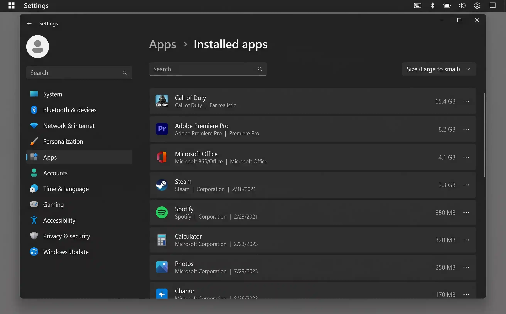

Why the Downloads folder is always a mess
Every browser on every operating system defaults to dumping files into a single Downloads folder. Installers, PDF invoices, zip archives, images from emails, CSV exports, meeting recordings — they all land in the same place with no organisation whatsoever.
The problem compounds because most of these files are only needed once. You download an installer, run it, and never think about it again — but the 800 MB file stays. You open a PDF to check one number, close it, and it sits in Downloads for three years. Browsers even create duplicates automatically: download the same file twice and you get report.pdf and report (1).pdf.
The result is a folder with hundreds of files, no structure, and the creeping suspicion that deleting the wrong one will break something. It won't — and this guide will show you exactly what's safe to remove. If you're on Windows, this pairs well with our guide to freeing up disk space on Windows 11; on a Mac, see freeing up storage on a Mac.
Deleting a file from Downloads sends it to the Recycle Bin (Windows) or Bin (macOS). You can always recover it within 30 days. Nothing in this guide bypasses the bin unless you explicitly empty it.
Step 1 — Sort by date and delete anything older than 3 months
The fastest way to halve your Downloads folder is to sort by date and delete everything old. If you downloaded something three months ago and haven't touched it since, you almost certainly don't need it.
On Windows
See also Microsoft's guide to freeing up drive space.
-
1
Open File Explorer and navigate to Downloads
Press Win + E, then click Downloads in the left sidebar.
-
2
Sort by Date Modified
Click View → Sort by → Date modified (oldest first). Everything at the top of the list is your oldest clutter.
-
3
Select and delete old files
Click the first file, hold Shift, and click the last file older than 3 months. Press Delete. They go to the Recycle Bin — nothing is permanently lost yet.
On macOS
See also Apple's Mac storage guide.
-
1
Open Finder and go to Downloads
Press Cmd + Shift + L or click Downloads in the Finder sidebar.
-
2
Sort by Date Added
Click View → Sort By → Date Added. This shows when each file arrived, which is more useful than Date Modified for downloads.
-
3
Select and move to Bin
Select old files and press Cmd + Delete. They move to the Bin and can be recovered for 30 days.

Sorting by date immediately surfaces the oldest files — the ones most likely to be safe to delete.
Step 2 — Delete installer files and disk images
Installer files are always safe to delete once the software is installed. They serve no purpose afterwards — if you ever need the software again, you'll download a fresh (and likely updated) installer from the developer's website.
These files are often the largest in your Downloads folder. A single game or creative-app installer can be 1–4 GB.
How to find them
- Windows: In File Explorer, type
*.exe OR *.msiin the search bar while inside your Downloads folder. - macOS: In Finder, type
.dmgor.pkgin the search bar. Make sure the scope is set to "Downloads" not "This Mac".
Select all results and delete them. Every single one is safe to remove.
Common Downloads file types — what's safe to delete?
| File type | What it is | Safe to delete? | Notes |
|---|---|---|---|
| .exe | Windows installer / program | Yes — always | The software is already installed; the installer file is a leftover. |
| .msi | Windows installer package | Yes — always | Same as .exe — just a different installer format. |
| .dmg | macOS disk image | Yes — always | You dragged the app to Applications already; the .dmg is the packaging. |
| .pkg | macOS installer package | Yes — always | Already ran the installer — the package file has no further use. |
| .zip / .rar / .7z | Compressed archive | Yes — if already extracted | If you've already unzipped the contents, the archive is redundant. |
| .tmp / .crdownload | Temporary / incomplete download | Yes — always | Failed or in-progress downloads. Completely safe to remove. |
| Document | Check first | Might be an important invoice or receipt. Skim the filename before deleting. | |
| .csv / .xlsx | Spreadsheet / data export | Check first | Could be a one-off export or something you still need. Move to Documents if in doubt. |
| .iso | Disc image | Yes — usually | Large files (often 4+ GB). Unless you plan to burn or mount it again, delete. |
After sorting by date, try sorting by size. Installer files and disk images are almost always the largest items. Deleting five big installers often frees more space than deleting a hundred small PDFs.
Step 3 — Move documents worth keeping
Not everything in Downloads is rubbish. PDFs of tax returns, receipts, downloaded photos, and spreadsheets you actually need have a habit of staying in Downloads because moving them feels like a task for later. Later never comes.
The "To Sort" folder method
-
1
Create a "To Sort" folder in Documents
This is a temporary holding area. Don't worry about perfect organisation yet — the goal is to get files out of Downloads quickly.
-
2
Scan Downloads for anything worth keeping
Look for PDFs, photos, spreadsheets, or documents with meaningful filenames. If a filename tells you nothing (
download.pdf,Untitled.csv), open it briefly to check. -
3
Move keepers to "To Sort", delete the rest
Drag the keepers into your To Sort folder. Delete everything else. Come back to To Sort later and file things into proper folders — but Downloads is now clean.
Set a calendar reminder for one week from now to file the contents of your To Sort folder properly. If it still has items after a month, you probably don't need them.
Step 4 — Handle duplicate downloads
Browsers automatically rename duplicate downloads by appending a number in parentheses: report.pdf, report (1).pdf, report (2).pdf. Over time, these duplicates accumulate silently. You might have three or four copies of the same file without realising it.
Find and delete duplicates
- Windows: In File Explorer, search your Downloads folder for
(1). This surfaces all first-round duplicates. Repeat with(2)and(3)if needed. - macOS: In Finder, search for
(1)within Downloads. You can also use View → Group By → Name to spot clusters of similarly named files.
Every file with a parenthesised number is a duplicate of an earlier download. The original (without a number) is still there. Select all the numbered copies and delete them.
After searching, press Ctrl + A (Windows) or Cmd + A (macOS) to select all results at once, then delete in one go. This is especially satisfying when there are dozens of duplicates.
Step 5 — Set up a system to keep it clean
A clean Downloads folder stays clean only if you change the habits that filled it in the first place. Three small changes prevent the mess from returning.
1. Tell your browser to ask where to save
By default, browsers dump everything into Downloads without asking. Changing this one setting forces you to choose a destination each time — which means files go where they belong from the start.
- Chrome: Settings → Downloads → toggle on "Ask where to save each file before downloading"
- Firefox: Settings → General → Files and Applications → select "Always ask you where to save files"
- Edge: Settings → Downloads → toggle on "Ask me what to do with each download"
- Safari: Safari → Preferences → General → File download location → "Ask for each download"
2. Enable automatic cleanup (Windows)
Windows has a built-in feature called Storage Sense that can automatically delete files from Downloads after a set period.
-
1
Open Settings → System → Storage
Toggle on Storage Sense if it isn't already.
-
2
Click "Configure Storage Sense or run it now"
Under "Delete files in my Downloads folder if they have been there for over", choose 30 days or 60 days.
3. Build a monthly cleanup habit
Even with the settings above, a quick monthly check keeps things tidy. Set a recurring reminder — first of the month, 5 minutes — and do this:
- Open Downloads, sort by date, and delete anything older than 30 days.
- Move any documents worth keeping to their proper folder.
- Empty the Recycle Bin / Bin if you're confident everything in it is genuinely done with.
Unlike Windows Storage Sense, macOS has no native option to auto-delete old downloads. You can achieve the same result with the free Hazel app (paid, but excellent) or by creating a simple Automator folder action that moves files older than 30 days to the Bin.
Quick wins — ranked by effort vs. reward
| Action | Time needed | Typical space freed | Difficulty |
|---|---|---|---|
| Delete .exe / .dmg installer files | 2 min | 1 – 10 GB | Easy |
| Delete duplicate files with (1), (2) etc. | 3 min | 500 MB – 3 GB | Easy |
| Delete everything older than 3 months | 5 min | 2 – 15 GB | Easy |
| Remove .tmp and .crdownload files | 1 min | 100 MB – 1 GB | Easy |
| Delete extracted .zip / .rar archives | 3 min | 500 MB – 5 GB | Easy |
| Move documents to proper folders | 10 min | varies | Medium |
| Set browser to ask before downloading | 1 min | Prevents future mess | Easy |
| Enable Storage Sense (Windows) | 2 min | Automatic ongoing cleanup | Easy |
Keeping it clean going forward
The Downloads folder will always accumulate files — that's its job. The goal isn't to keep it permanently empty but to stop it from becoming an unmanageable dumping ground. Three habits make the difference:
- Monthly 5-minute sweep. First of the month: open Downloads, sort by date, delete anything old, move anything worth keeping. Five minutes. Done.
- Let your browser ask. The single most effective prevention: set your browser to ask where to save files. Most downloads go straight to the right folder and never touch Downloads at all.
- Treat Downloads as a temporary inbox, not a filing cabinet. If a file matters enough to keep, it matters enough to move to Documents, Pictures, or a project folder. Downloads is a transit zone — things should pass through, not live there.
First of the month: delete installers and .tmp files (1 min), delete duplicates with parenthesised numbers (1 min), move any keepers to Documents (2 min), delete everything else older than 30 days (1 min). Under 5 minutes — and your Downloads folder stays permanently under control.